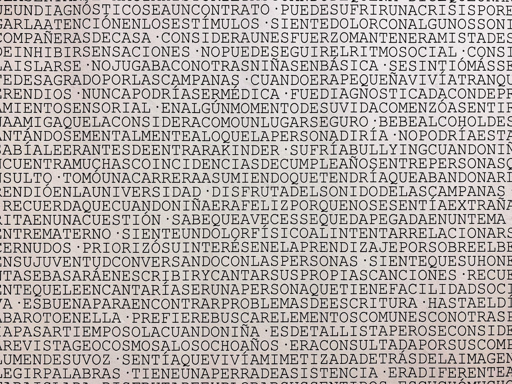
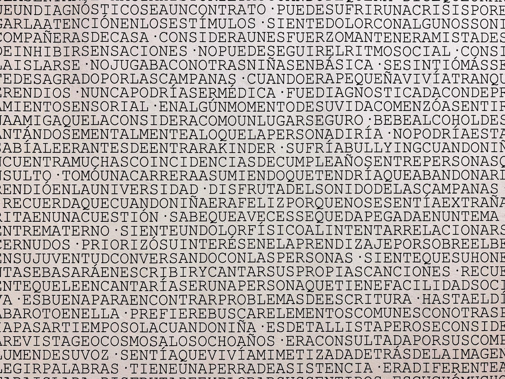
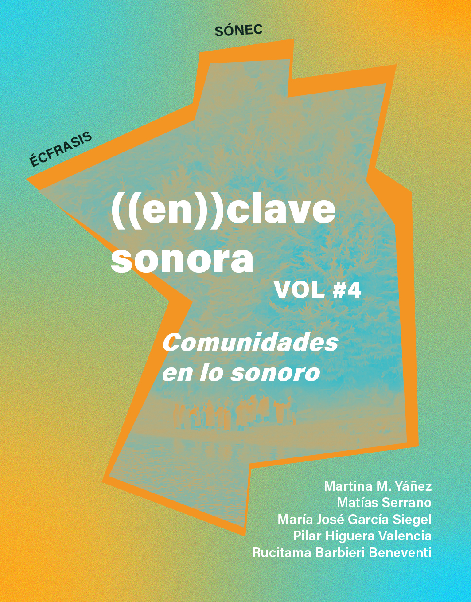

amplificar la duda
Exploraciones mediales sobre las sensibilidades extrañas
Proyecto final Magíster en Artes Mediales (2021-2024)

Proyecto AFE Tesis guiado por Rainer Krause
Asistencia en montaje exhibición: Vicente Espinoza, Leonor Medina, Bárbara Molina, Emilia Moreno, Tomás Navia, María Ignacia Valdebenito, Almendra Díaz, Cesar Fuenzalida, Fernanda Fuenzalida
Agradecimientos a las personas que accedieron a ser escuchadas y compartieron su sensibilidad y extrañeza.


Texto de muro
Investigación artística que realicé a partir de mi diagnóstico tardío de trastorno del espectro autista, condición que forma parte de los trastornos del neurodesarrollo y que se asocia a las dificultades de comunicación, las conductas repetitivas y una capacidad sensorial alterada. Desde ese momento, indagué sobre la definición e historia de esta condición, que lleva mutando más de 100 años: inicialmente, como un síntoma de la esquizofrenia, pasando por psicopatía esquizoide, autismo infantil o síndrome de Asperger, hasta llegar al paradigma de la neurodiversidad y el concepto actual de TEA, que se ha popularizado en los últimos años. Dado que aún no se tiene claridad sobre el porcentaje real de la población que vive con esto, ni tampoco se han generado mecanismos de detección cien por ciento efectivos, es esperable que estas etiquetas diagnósticas se sigan alterando en el futuro.
Inspirado por el trabajo audiovisual de Amel Baggs en In my language (2007) y de los dibujos de los movimientos cotidianos de niños autistas realizados por Fernand Deligny, me propuse retroceder a los gestos y rasgos que los diagnósticos psiquiátricos buscan envolver, sugiriendo el concepto de “sensibilidad extraña”. Desde esta idea, generé instancias de escucha donde dialogué con personas adultas que, independiente de si contaban o no con un diagnóstico, me comentaron sus historias, dudas, rasgos y comportamientos que podrían ser calificados como extraños. A través de la exposición, reflexiono en torno a las percepciones, rasgos y gestos extraños, especulando sobre los límites y categorías de lo que significa ser una persona.
 

Click para ampliar imagen
Publicación en ((en))clave sonora vol #4
Click para mas información
Documentación
Escrito completo disponible en repositorio.uchile.cl
Audio binaural
Grabaciones de audio en binaural por Rainer Krause